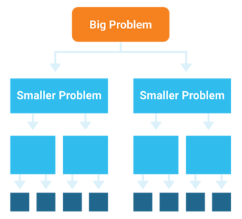
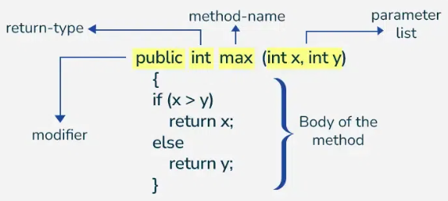

1. Métodos - ¿Qué es un método?
1.1. ¿Qué es un método y por qué usarlos?
Un método es un bloque de código reutilizable que realiza una tarea específica. Los métodos son fundamentales en la programación porque permiten:
Descomposición de problemas (Decomposition)
Los métodos permiten dividir un problema complejo en problemas más pequeños y manejables. En lugar de escribir todo el código en un único main, podemos crear métodos especializados que resuelven partes específicas del problema.

- Un programa grande se divide en tareas más pequeñas y controlables.
- Cada método tiene una responsabilidad clara y definida.
- El código es más fácil de entender y seguir.
Reutilización de código (Reusability)
Una vez que escribimos un método, podemos usarlo múltiples veces sin tener que reescribir el código. Esto ahorra tiempo y reduce errores.
- El mismo método puede ser llamado desde diferentes partes del programa.
- No repetimos código innecesariamente (principio DRY: Don't Repeat Yourself).
- Si hay un error en el método, lo arreglamos en un solo lugar.
Legibilidad y mantenimiento
Un código bien estructurado con métodos descriptivos es mucho más fácil de leer y mantener.
- El nombre del método indica qué hace (auto-documentación).
- Otros programadores (o tú mismo después de un tiempo) entienden el código más rápidamente.
- Es más fácil hacer cambios y mejoras sin romper el programa.
Ejemplo: Con y sin métodos
Sin métodos (problemático):
public class Main {
public static void main(String[] args) {
// Validar edad usuario 1
Scanner sc = new Scanner(System.in);
int edad1 = 0;
do {
try {
System.out.println("Introduce la edad del usuario 1: ");
edad1 = sc.nextInt();
if (edad1 >= 0 && edad1 <= 150) break;
} catch (Exception e) {
System.out.println("Error");
sc.nextLine();
}
} while (true);
// Validar edad usuario 2 (repetimos el mismo código)
int edad2 = 0;
do {
try {
System.out.println("Introduce la edad del usuario 2: ");
edad2 = sc.nextInt();
if (edad2 >= 0 && edad2 <= 150) break;
} catch (Exception e) {
System.out.println("Error");
sc.nextLine();
}
} while (true);
}
}Con métodos (óptimo):
public class Main {
// Método reutilizable
public static int validarEdad(String mensaje) {
Scanner sc = new Scanner(System.in);
int edad = 0;
do {
try {
System.out.println(mensaje);
edad = sc.nextInt();
if (edad >= 0 && edad <= 150) return edad;
} catch (Exception e) {
System.out.println("Error");
sc.nextLine();
}
} while (true);
}
public static void main(String[] args) {
int edad1 = validarEdad("Introduce la edad del usuario 1: ");
int edad2 = validarEdad("Introduce la edad del usuario 2: ");
}
}1.2. Conceptos fundamentales
- Un método de Java bien escrito realiza sólo una tarea.
- La declaración completa de un método se llama "firma del método".
- La instrucción return se usa para que el método pueda retornar cualquier tipo de dato (objeto o primitivo). También se puede aplicar en métodos que no devuelven un valor para salir de la ejecución del mismo en algún punto.
- Parámetro de entrada: este campo es obligatorio pero puede estar vacío. Si se necesitan múltiples parámetros han de ir separados por comas. Se pueden usar "parámetros varargs" (argumentos de longitud variable) que siempre han de ir al final. Solo puede ir un "varargs" por método.
- Nosotros trabajaremos de momento con métodos estáticos (STATIC). Más adelante explicaremos qué implica esta palabra clave.
1.3. Firma del método

La estructura completa de un método es la siguiente:
public final void nap(int minutes) throws InterruptedException {
// código del método
}Los componentes de una firma del método son:
| Elemento | Valor | Obligatorio |
|---|---|---|
| Modificador Acceso | public | No |
| Especificador opcional | final | No |
| Tipo de valor de retorno | void | Sí |
| Nombre del método | nap | Sí |
| Parámetros de entrada | (int minutes) | Sí, pero puede ir vacío |
| Excepción (opcional) | throws InterruptedException | No |
| Código | //code | Sí, pero puede ir vacío |
1.4. Ejemplo práctico
Un ejemplo clásico es un método que pide un número entero al usuario dentro de un rango específico:
public class Fecha {
public static int pedirEntero(int min, int max, String texto) {
Scanner sc = new Scanner(System.in);
do {
int n;
try {
System.out.println(texto);
n = sc.nextInt();
if (min <= n && n <= max)
return n;
} catch (Exception e) {
System.out.println("Valor incorrecto");
sc.nextLine();
}
} while (true);
}
public static void main(String[] args) {
int day = pedirEntero(1, 31, "Introduce un numero entre 1 y 31: ");
int month = pedirEntero(1, 12, "Introduce un numero entre 1 y 12: ");
int year = pedirEntero(0, 2025, "Introduce un numero entre 0 y 2025: ");
System.out.println("Fecha: " + day + "/" + month + "/" + year);
}
}1.5. Paso de argumentos por valor
Java es un lenguaje "pass-by-value", es decir, el método trabaja con una copia de la variable que se le pasa como parámetro. Si es un primitivo pasaremos una copia del valor y si es una referencia una copia de la dirección del objeto al que apunta.
Comportamiento con primitivos
En el caso de un primitivo, la copia de la variable y la variable son dos entidades diferentes. Cualquier modificación sufrida dentro del código del método no afecta a la variable externa.
public class Vector {
public static int modificarValor(int n) {
int y = ++n;
return y;
}
public static void main(String[] args) {
int numero = 1;
System.out.println(numero);
int y = modificarValor(numero);
System.out.println(numero);
System.out.println(y);
}
}Comportamiento con objetos
En el caso de un objeto, la copia de la referencia y la referencia son dos entidades diferentes, pero apuntan a la misma estructura de datos. Cualquier modificación sufrida dentro del código del método afecta al objeto.
import java.util.Arrays;
public class Vector {
public static int[] modificarVector(int[] n) {
for (int i = 0; i < n.length; i++)
n[i] = 5;
return n;
}
public static void main(String[] args) {
int[] numeros = {1, 2, 3, 4, 5};
System.out.println(Arrays.toString(numeros));
modificarVector(numeros);
System.out.println(Arrays.toString(numeros));
}
}1.6. Sobrecarga de métodos
La sobrecarga de métodos ocurre cuando en una misma clase hay varios métodos con el mismo nombre pero con argumentos de entrada diferentes en cuanto a tipo, orden o número.
Ejemplo de sobrecarga
public class Vector {
public static int[] modificarVector(int ... n) {
for (int i = 0; i < n.length; i++)
n[i] = 5;
return n;
}
public static int[] modificarVector(int valor, int[] n) {
for (int i = 0; i < n.length; i++)
n[i] = valor;
return n;
}
public static void main(String[] args) {
int[] n1 = {1, 2, 3, 4, 5};
modificarVector(n1);
System.out.println(Arrays.toString(n1));
int[] n2 = {1, 2, 3, 4, 5};
modificarVector(6, n2);
System.out.println(Arrays.toString(n2));
}
}1.7. Recursividad
En Java, un método se puede invocar a sí mismo y se denomina método recursivo.
Puntos importantes sobre recursividad
- Cuando un método se llama a sí mismo, se asigna almacenamiento en la memoria STACK a nuevas variables locales y parámetros.
- Una invocación recursiva no crea una nueva copia del método.
- Un exceso de invocaciones recursivas a un método puede provocar el desbordamiento de pila.
- Las versiones recursivas de muchas rutinas pueden ejecutarse más lentamente que sus equivalentes iterativas debido a la sobrecarga añadida de las invocaciones métodos adicionales.
Ejemplo: Factorial recursivo vs iterativo
public class Factorial {
// Función recursiva
public static int factR(int n) {
int result;
if (n == 1) return 1;
result = factR(n - 1) * n;
return result;
}
// Un equivalente iterativo
public static int factI(int n) {
int result = 1;
for (int t = 1; t <= n; t++) result *= t;
return result;
}
public static void main(String[] args) {
System.out.println(factR(5));
System.out.println(factI(5));
}
}2. Clase String
2.1. La clase String
- Se usa para manipular texto y se halla en el paquete java.lang.
- Maneras de crear un objeto String:
String name = "Manolo";String name = new String("Manolo");
- Cuando se crea sin el método "new", el String es compartido y se almacena en un espacio de memoria denominado "String Pool" dentro del HEAP. Si se hace con el método "new", se crea un nuevo objeto y almacena fuera del "String Pool" y puede ser eliminado por el Garbage Collector.
- Inmutabilidad: una vez se ha creado un objeto String, no se puede modificar. No se puede cambiar ningún carácter.
- Concatenación (+, +=): Cada vez que se concatenan Strings se crean objetos diferentes.
2.2. Ejemplo de concatenación
public class Concatenacion {
public static void main(String[] args) {
String a = "Pedro";
String b = new String("Juan");
int c = 100;
double d = 1.2;
System.out.println(a + b + c + d);
System.out.println(d + c + b + a);
System.out.println(a + c + b + d);
System.out.println(c + a + b + d);
}
}2.3. Métodos importantes de la clase String
- int length(): devuelve el tamaño del String
- char charAt(int index): devuelve el carácter que ocupa la posición index. Si se accede a una posición no existente Java lanza una excepción
StringIndexOutBoundsException - int indexOf(...): devuelve la posición donde se localiza la primera coincidencia. Devuelve -1 si no encuentra coincidencias.
- String substring(int begin, int end): devuelve un substring comprendido entre las posiciones (sin incluir end).
- String toLowerCase(), String toUpperCase(): convierte a minúsculas o mayúsculas.
- boolean equals(String str): determina si dos objetos tienen el mismo contenido (case-sensitive).
- boolean equalsIgnoreCase(String str): determina si dos objetos tienen el mismo contenido (case-insensitive).
- boolean startsWith(String prefix): determina si un String empieza con un prefijo.
- boolean endsWith(String sufix): determina si un String acaba con sufijo.
- boolean contains(String str): determina si el String contiene el string str.
- String replace(char oldChar, char newChar): sustituye caracteres.
- String trim(): elimina espacios en blanco al principio y final.
- String concat(String str): concatena dos strings (permite encadenamiento de métodos).
2.4. Ejemplo práctico con String
public class MetodosString {
public static void main(String[] args) {
String a = " La casa de papel ";
// Recorrer String
for (int i = 0; i < a.length(); i++)
System.out.print(a.charAt(i));
// Recortar String
System.out.println(a.substring(2, 5));
// Transformar a mayúsculas
System.out.println(a.toUpperCase());
// Eliminar espacios al principio y al final
System.out.println(a.trim());
}
}3. Clase StringBuilder
3.1. ¿Por qué StringBuilder?
- Es similar a la clase String excepto que es mutable.
- Reutiliza el mismo StringBuilder sin crear más en memoria, modificando su tamaño.
- En ningún caso se almacenan en el "StringPool".
3.2. Creación de objetos StringBuilder
StringBuilder str = new StringBuilder(); // StringBuilder vacío, size=0
StringBuilder str = new StringBuilder("Hola"); // Con contenido inicial
StringBuilder str = new StringBuilder(10); // Reservamos una capacidad3.3. Métodos importantes
- Compartidos con String: length(), charAt(), substring(), indexOf()
- StringBuilder append(String str): para concatenar String (igual que concat() de String).
- StringBuilder insert(int offset, String str): añade un String en la posición indicada.
- StringBuilder delete(int start, int end): borra los caracteres entre posiciones.
- StringBuilder deleteCharAt(int index): borra el carácter en la posición indicada.
- String toString(): convierte un StringBuilder en un String.
3.4. Nota importante sobre comparación
Tanto el operador == como el método equals() verifican que las referencias apuntan al mismo objeto, no el contenido.
3.5. Ejemplo práctico: String vs StringBuilder
public class StrBuild {
public static void main(String args[]) {
String alpha = "";
String abc = "abcdefghijklmnopqrstuvwxyz";
for (char c = 'a'; c <= 'z'; c++)
alpha += c;
System.out.println(alpha);
StringBuilder alpha2 = new StringBuilder();
for (char c = 'a'; c <= 'z'; c++)
alpha2.append(c);
System.out.println(alpha2);
StringBuilder test = new StringBuilder(alpha);
System.out.println(test.append("yzwvut"));
System.out.println(test.reverse());
System.out.println(test.length());
}
}4. Clase Array
4.1. Conceptos básicos
- Un array es un objeto que representa una colección de variables u objetos del mismo tipo.
- Pueden ser unidimensionales o multidimensionales.
- Un array es inmutable, es decir, su tamaño no puede variar. Su contenido sí.
- La clase Array se encuentra en el paquete java.util.
4.2. Declaración de arrays
public class UF4 {
public static void main(String[] args) {
int[] numbers = new int[3];
char characters[] = new char[10];
byte bytes[] = new byte[]{1, 2, 3};
String[] strings = {"Hola", "Adiós"};
StringBuilder stringBuilders[] = new StringBuilder[5];
for (int a : numbers)
System.out.println(a);
}
}4.3. Excepción: ArrayIndexOutOfBoundsException
Se produce cuando se intenta acceder a una posición de un array que no existe.
4.4. Métodos importantes de la clase Arrays
- toString(): devuelve el contenido de un array
- sort(): ordena un array (números antes que letras y letras UpperCase antes que LowerCase)
- equals() y ==: NO comparan el contenido, sino la referencia
4.5. Ejemplo: toString() y sort()
import java.util.Arrays;
public class UF4 {
public static void main(String[] args) {
String[] ejemplos = {"1", "Hola", "4", "Adiós", "1000"};
System.out.println(Arrays.toString(ejemplos));
Arrays.sort(ejemplos);
System.out.println(Arrays.toString(ejemplos));
for (int i = 0; i < ejemplos.length; i++)
System.out.print(ejemplos[i] + ", ");
}
}4.6. Arrays multidimensionales (Matrices)
Los arrays pueden tener múltiples dimensiones para representar matrices y estructuras más complejas.
public class multiArray {
public static void main(String[] args) {
int[][] numbers = {{1, 2, 3}, {4, 5}, {6, 7, 8, 9}};
System.out.println(numbers.length);
for (int h = 0; h < numbers.length; h++)
System.out.println(numbers[h].length + " ");
// Recorrer el array con for clásico
for (int i = 0; i < numbers.length; i++) {
for (int j = 0; j < numbers[i].length; j++)
System.out.print(numbers[i][j] + " ");
System.out.println();
}
// Recorrer el array con for mejorado
for (int[] col : numbers) {
for (int fil : col)
System.out.print(fil + " ");
System.out.println();
}
}
}5. Clase ArrayList
5.1. Características
- Un ArrayList puede cambiar su tamaño en tiempo de ejecución.
- No puede contener datos primitivos, sólo objetos.
- La clase ArrayList se encuentra en el paquete java.util.
5.2. Métodos importantes
- boolean add(E element), void add(int index, E element): insertar un nuevo valor
- boolean remove(Object object), E remove(int index): borra el primer match en el array o el elemento en la posición especificada
- E set(int index, E newElement): cambia uno de los elementos del ArrayList sin cambiar el tamaño
- boolean isEmpty(), int size(): ambos métodos miran cuántos slots del ArrayList están en uso
- void clear(): vacía todos los slots de un ArrayList
- boolean contains(Object object): comprueba si un valor está en el ArrayList
- boolean equals(Object object): compara dos listas para ver si contienen los mismos elementos y en el mismo orden
- Object toArray(): convierte un ArrayList en un Array
5.3. Ejemplo práctico - Operaciones CRUD
Las operaciones CRUD (Create, Read, Update, Delete) son las operaciones más básicas con ArrayList:
import java.util.ArrayList;
public class UF4 {
public static void main(String[] args) {
ArrayList frutas = new ArrayList<>();
// CREATE (Crear/Agregar elementos)
frutas.add("Manzana");
frutas.add("Plátano");
frutas.add("Naranja");
System.out.println("Después de agregar: " + frutas);
System.out.println("Tamaño: " + frutas.size());
// READ (Leer elementos)
System.out.println("\n--- Lectura de elementos ---");
System.out.println("Primer elemento: " + frutas.get(0));
System.out.println("Elemento en índice 2: " + frutas.get(2));
System.out.println("¿Contiene 'Plátano'?: " + frutas.contains("Plátano"));
// Iterar sobre todos los elementos
System.out.println("Todas las frutas:");
for (String fruta : frutas) {
System.out.println(" - " + fruta);
}
// UPDATE (Actualizar elementos)
System.out.println("\n--- Actualización de elementos ---");
frutas.set(1, "Sandía"); // Cambia "Plátano" por "Sandía" en índice 1
System.out.println("Después de actualizar: " + frutas);
// DELETE (Eliminar elementos)
System.out.println("\n--- Eliminación de elementos ---");
frutas.remove("Naranja"); // Elimina por valor
System.out.println("Después de eliminar 'Naranja': " + frutas);
frutas.remove(0); // Elimina por índice
System.out.println("Después de eliminar índice 0: " + frutas);
// Limpiar todo el ArrayList
frutas.clear();
System.out.println("Después de clear(): " + frutas);
System.out.println("¿Está vacío?: " + frutas.isEmpty());
}
} 6. Wrappers (Clases Envoltorio)
6.1. ¿Qué son los Wrappers?
- En ocasiones es muy conveniente poder tratar los datos primitivos (int, boolean, etc.) como objetos.
- Pero los datos primitivos no son objetos, con lo que quedan en principio excluidos de estas posibilidades.
- Para resolver esta situación el API de Java incorpora las clases envoltorio (wrapper class), que no son más que dotar a los datos primitivos con un envoltorio que permita tratarlos como objetos.
6.2. Consideraciones importantes
- Las operaciones aritméticas habituales (suma, resta, multiplicación...) están definidas solo para los datos primitivos, por lo que las clases envoltura no sirven para este fin.
- Las variables primitivas tienen mecanismos de reserva y liberación de memoria más eficaces y rápidos que los objetos, por lo que deben usarse datos primitivos en lugar de sus correspondientes envolturas siempre que se pueda.
6.3. Correspondencia primitivos-Wrappers
| Tipo primitivo | Clase Wrapper | Ejemplo de construcción |
|---|---|---|
| boolean | Boolean | new Boolean(true) |
| byte | Byte | new Byte((byte)1) |
| short | Short | new Short((short)1) |
| int | Integer | new Integer(1) |
| long | Long | new Long(1) |
| float | Float | new Float(1.0) |
| double | Double | new Double(1.0) |
| char | Character | new Character('c') |
6.4. Convertir String a primitivo o Wrapper
| Clase Wrapper | Convertir de String a primitivo | Convertir de String a Wrapper |
|---|---|---|
| Boolean | Boolean.parseBoolean("true") |
Boolean.valueOf("true") |
| Byte | Byte.parseByte("1") |
Byte.valueOf("2") |
| Short | Short.parseShort("1") |
Short.valueOf("2") |
| Integer | Integer.parseInt("1") |
Integer.valueOf("2") |
| Long | Long.parseLong("1") |
Long.valueOf("2") |
| Float | Float.parseFloat("1.0") |
Float.valueOf("2.0") |
| Double | Double.parseDouble("1.0") |
Double.valueOf("2.0") |
| Character | Usar charAt(int index) de String |
|
6.5. Conversión de String a primitivo/Wrapper
// String a primitivo
int primitive = Integer.parseInt("123");
// String a wrapper
Integer wrapper = Integer.valueOf("123");
// Ejemplos incorrectos (generan NumberFormatException)
// int bad1 = Integer.parseInt("a");
// Integer bad2 = Integer.valueOf("123.23");
// Para Character: usar charAt()
// String->primitivo:
String string = "a";
char c = string.charAt(0);
// String->wrapper:
String string = "a";
Character c = new Character(string.charAt(0));6.6. Autoboxing y Unboxing
Autoboxing
Java convierte automáticamente un primitivo a su wrapper cuando es necesario:
import java.util.*;
public class Autoboxing {
public static void main(String[] args) {
ArrayList entero = new ArrayList();
// NO hace falta convertir de int a Integer
entero.add(1); // Java lo hace automáticamente
// Java lo hace automáticamente
entero.add(2);
System.out.println("Integer: " + entero.get(0) + "; int: " + entero.get(1));
}
} Unboxing
Java convierte automáticamente un objeto wrapper a su primitivo:
public class Unboxing {
public static void main(String[] args) {
// Autoboxing por el JDK
Integer a = 10;
// Misma operación sin autoboxing
Integer b = new Integer(10);
// Unboxing por el JDK
int c = a;
// Misma operación sin Unboxing
int d = a.intValue();
}
}6.7. Cuidado con ArrayList.remove()
La clase ArrayList tiene dos métodos remove():
- remove(int index): Removes the element at the specified position
- remove(Object o): Removes the first occurrence of the specified element
public class Autoboxing {
public static void main(String[] args) {
ArrayList entero = new ArrayList();
entero.add(new Integer(1));
entero.add(2);
System.out.println(entero.remove(1)); // Elimina por índice
System.out.println(entero.remove(new Integer(1))); // Elimina por valor
System.out.println(entero.size());
}
}